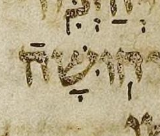
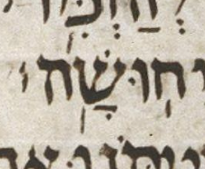
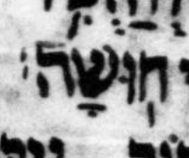

← Back to the case register.
At Ps. 70:2, the Aleppo Codex and Cambridge Add. 1753 have the silluq alone, while the Leningrad Codex has the silluq and a second metsil. The second Leningrad metsil is the likely meteg after the silluq.


